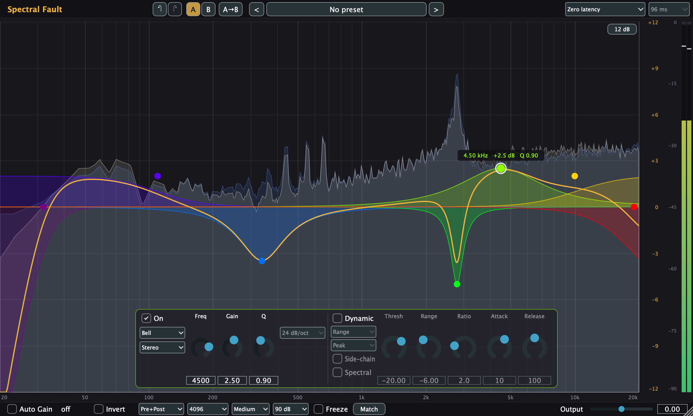

Spectral Fault user guide
A 16-band parametric and dynamic equalizer with linear phase, per-band stereo, peak pick, EQ Sketch and EQ Match. Start with the interface tour, then pick a walkthrough for the job at hand.
Interface tour
Click a numbered marker (or use the arrows) to see what each part does.

Walkthroughs
Starting points for common jobs. Frequencies and amounts are typical values to begin from; always adjust by ear.
Mouse and keys
| Where | Action | Result |
|---|---|---|
| Empty display | Double-click | Adds a Bell at that frequency and gain (first free band) |
| Empty display | Drag | Selection rectangle (Shift adds to the selection) |
| Empty display | ⌥ Option + drag | EQ Sketch: draw a curve; on release it becomes bands |
| Node | Click / ⌘-click | Selects the band / adds or removes it from the selection |
| Node | Drag | Moves frequency and gain of every selected, enabled band (Shift: fine) |
| Node | Scroll wheel or pinch | Changes Q (quick steps merge into one undo step) |
| Node | Double-click | Enables or disables the band |
| Node | Right-click | Menu: type, slope, channel, enable/disable, delete |
| Selection | Delete / ⌫ | Deletes the selected bands |
| Peak ring | Drag | Creates a Bell at the peak (Q from the peak's width); the drag sets its gain |
| Range button | Click | Display range ±3 / 6 / 12 / 30 dB |
| Output meter | Click | Resets the clip indicators |
| Undo / redo arrows | Click | Undo or redo your last edits (⌘Z stays with your host) |
Reading the display
The orange scale on the right is the EQ gain; the grey scale next to it is the analyzer level; the rightmost column is the output meter.
Questions
Which phase mode should I use?
Zero latency suits tracking, live use and most mixing: no delay, and the filters behave like analog ones. Linear phase keeps the phase relationships between frequencies intact, which matters when a track is also heard unprocessed elsewhere (parallel chains, multi-miked sources) or for mastering. It adds latency (96 / 181 / 352 ms at 48 kHz), which your host compensates for on playback, and steep or narrow low-frequency moves can cause audible pre-ringing before transients. Longer lengths reproduce narrow bass moves more precisely. Switching modes silences the output briefly while the new mode starts.
What does Auto Gain do?
It offsets the output so the EQ changes tone rather than loudness, computed from the curve with a loudness weighting (not measured from the audio). Cuts are not included, so a low cut does not raise the level. The correction is shown next to the switch.
What is the difference between Range and Ratio?
In Range mode the band moves smoothly from no change at the threshold to the full range 12 dB above it. In Ratio mode it behaves like a compressor or expander on that band: the change grows with the ratio, with a soft knee, and never exceeds the range. A negative range cuts when loud; a positive range boosts when loud.
Why did nothing happen when I pressed Apply in EQ Match?
Both spectra need at least a second of learning. Learning only runs while the plugin window is open and audio is playing through the plugin; learned spectra are then kept and saved with the project.
A new version does not show up in Logic.
Logic keeps a plugin's code loaded until it quits: quit Logic (⌘Q) and reopen the project.